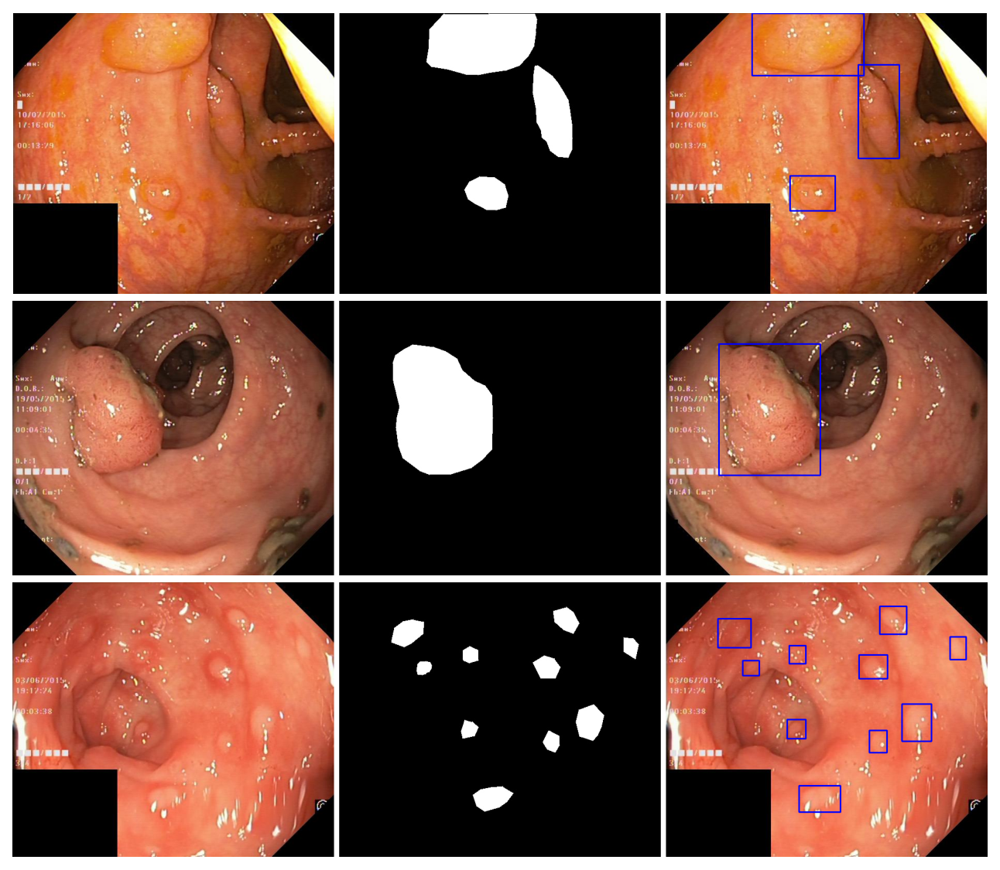
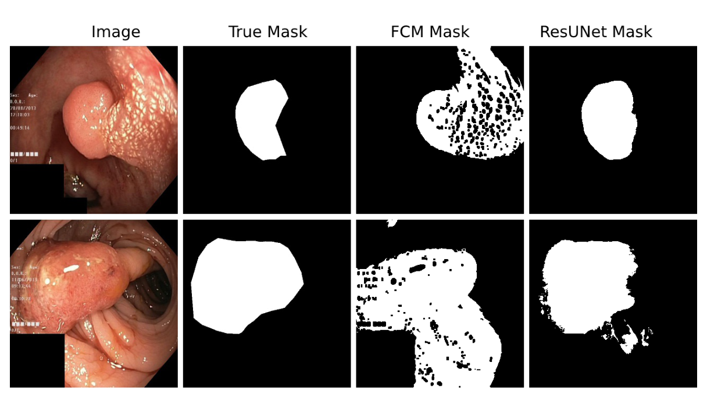
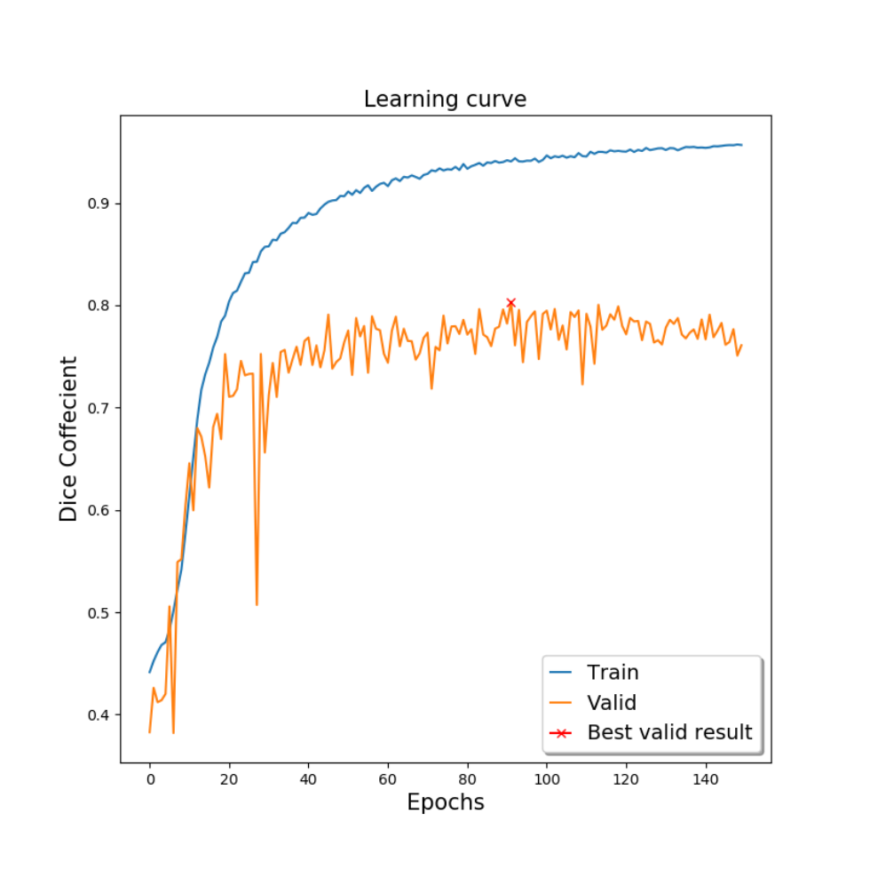

图文解读
1背景与动机
息肉会被漏掉，而训练自动分割模型又缺少开放的标注数据。 论文引用的研究显示，结肠镜检查中息肉漏检率按类型和大小在 14 到 30% 之间，而息肉是结直肠癌的前驱病变。
人工逐像素勾画费时，需要消化科医生参与，还存在观察者间差异；医疗图像又受隐私限制。作者梳理了已有的四个息肉分割数据集，认为它们要么需要注册或联系管理员，要么规模小，缺少一个可以直接下载、用于公平比较的开放数据集。
Kvasir 本身是 8 类各 1000 张的胃肠道图像分类数据集，只有帧级标签。Pozdeev 等人曾想在它上面评测分割，却因为没有真值而无法报告分数。这就是本文的直接起点。
2核心观点速览
这是一份数据发布说明，基线只是示范用法。
- 数据：
Kvasir息肉类的 1000 张图像（替换了其中 13 张），每张配一个 1-bit 二值掩码，边界框写在 JSON 文件里。 - 标注：工程师和医生在
Labelbox中勾画，消化科专家复核。 - 基线：
ResUNet测试Dice0.787763、mIoU0.777771；FCM聚类测试Dice只有 0.239002。 - 边界：一次随机划分、无方差；患者数、标注一致性、划分文件论文未说明。
接下来先看数据怎么构建，再看基线说明了什么。
3数据从哪来、怎么标
图像全部来自 Kvasir 的息肉类。 作者为提升质量替换了其中 13 张，替换图由挪威 Vestre Viken 医疗信托的消化科医生采集和核验；其余图像的采集细节本文未交代，指向 Kvasir 原论文。
标注流程分四步：
- 把 1000 张图上传到
Labelbox。 - 一名工程师和一名医生组成的小组勾画息肉边缘，经验丰富的消化科医生复核。
- 导出 JSON 中的 ROI 坐标点，在全黑图上画轮廓并填白，生成二值掩码。
- 由掩码计算外接框，写入 JSON。

标注质量无法量化。 摘要说由“一名医生”标注，正文说由“工程师加医生”的小组勾画，两处不一致；标注者间一致性和复核修改比例论文未说明。原图分辨率、患者数量和息肉大小分布也论文未说明。
数据形态清楚之后，下一个问题是怎么评测。
4指标和基线怎么设
论文推荐两个指标。设预测像素集合与真值像素集合分别为 $A$、$B$：
mIoU 的口径没有交代清楚。 公式里出现了阈值 $t$，但取哪些阈值、逐图还是全局平均、是否包含背景类，论文未说明；实验中只用 $t=0.5$ 把预测二值化。
两个基线的设置：
| 项目 | FCM | ResUNet |
|---|---|---|
| 学习方式 | 无监督聚类，无参数 | 有监督，编码器和解码器各 5 个卷积块 |
| 预处理 / 增强 | 灰度、中值模糊、Otsu、边缘与膨胀 | 翻转、裁剪、缩放、旋转、亮度、cutout、随机擦除 |
| 输入 | 展平成 1D 的像素 | 320×320 |
| 训练 | 无 | batch 8，150 个 epoch，Nadam，学习率 0.0001 |
| 未给出的设置 | 聚类数、阈值、膨胀核 | 每块通道数、随机种子 |
划分是 80/10/10 的随机划分，是否按患者划分论文未说明。
5结果说了什么
| 划分 | 损失 | Dice | mIoU |
|---|---|---|---|
| 训练 | 0.059389 | 0.940609 | 0.920957 |
| 验证 | 0.196520 | 0.803479 | 0.792339 |
| 测试 | 0.212236 | 0.787763 | 0.777771 |
测试集上 FCM 的 Dice 为 0.239002、mIoU 为 0.314187。两种方法差距很大，说明这份数据能区分“学到形状”和“只看颜色”的方法。

作者把 FCM 的失败归因于颜色特征难以区分息肉和其他胃肠道组织。表 1 中损失与 Dice 之和约为 1，和“用 Dice 作损失”一致。
6为什么要小心这些数字
训练和测试的 Dice 差距明显，说明存在过拟合。 作者也认为加入更多样的息肉图像能提升性能。

验证曲线抖动明显，模型是挑出验证最高点后在测试集上只评一次。只有一次划分、没有方差，0.787763 的波动范围无法估计。
FCM 的 mIoU 高于 Dice，这在同一口径下不会发生。 同一组预测逐图计算时 Dice 不低于 IoU。我的判断：两个指标的计算口径可能不同，例如 mIoU 对前景和背景取了平均；论文未解释。
7结果没说什么
- 没有证明方法优于已有工作。 作者把结果与 Kang 等人的
IoU0.6607、Pozdeev 等人的Dice0.6200 到 0.8600 并列，但数据集不同，作者自己也承认没有直接可比的论文。 - 没有评估误报。 数据只有息肉阳性图像，无法测量在无息肉画面上的误检。
- 没有排除划分泄漏。 推断：若同一患者的多张图被随机分进训练和测试，分数会偏高；论文未给出患者信息，无法排除。
- 没有说明跨医院泛化。 图像只来自
Kvasir一个数据集，采集机构和设备分布论文未说明。
8它在已有数据集中的位置
| 数据集 | 规模 | 获取方式 |
|---|---|---|
| CVC-ColonDB | 1200 帧中 300 帧有标注 | 需注册 |
| ASU-Mayo | 18,781 帧训练，3,500 余帧有掩码 | 联系管理员 |
| ETIS-Larib | 196 帧 | 需注册 |
| CVC-ClinicDB | 612 帧 | 公开 |
| Kvasir-SEG | 1000 张 | 公开下载 |
它的优势是开放和规模：在可直接获取的息肉分割数据里，1000 张多于 CVC-ClinicDB 的 612 帧。论文提到 ASU-Mayo 帧间高度相似、容易过拟合，而 Kvasir-SEG 的帧间独立性因为缺少视频和患者信息同样无法核实。
9复现与复用要注意什么
- 固定并公开自己的划分，最好按患者划分；报告多次运行的均值和标准差。
- 写清
Dice和IoU是逐图平均还是全局累计，IoU是否含背景类。 - 跨数据集评测（如
CVC-ClinicDB训练、Kvasir-SEG测试）比单集内随机划分更能反映泛化。 - 检查模型是否依赖左下角黑块、检查信息文字或
ScopeGuide探头这类捷径。